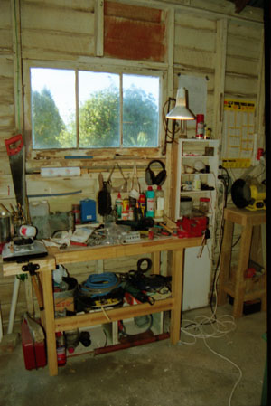
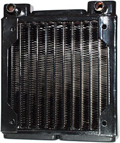
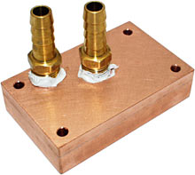

- water -
Consumer Product Safety Commission protects the public from unreasonable risks of injury or death from 15,000 types of consumer products under the agency's jurisdiction. . Consumer Product Safety Commission (CPSC), Crystal Mountain Water Cooler Corp. Approximately eighty percent of the water dispensers were sold in the United States. has received about 20 reports of the water cooler's insulation smoking, or igniting the unit.
|  |
|  |
Consumer Product Safety Commission protects the public from unreasonable risks of injury or death from 15,000 types of consumer products under the agency's jurisdiction. . Consumer Product Safety Commission (CPSC), Crystal Mountain Water Cooler Corp. Approximately eighty percent of the water dispensers were sold in the United States. has received about 20 reports of the water cooler's insulation smoking, or igniting the unit. |
|
pdf) PNL TechFocus ORNL's New Programs For FEMP and FEMP Technology Focus on GFX (pdf) Bob Vila's Habitat Blitz Build Cobb Hill -1st U. nonresidential, commercial, industrial, state and federal applications increases potential savings to over 7 billion equivalent gallons of oil per year. Perhaps the most important and tangible benefit to owners of all-electric homes is GFX's ability to triple the shower-capacity of an electric water heater and halve the cost of a hot-shower. For example, whenever GFX boosts the cold water temperature by 30 degrees, it's recycling about 10 kW of power from drain water; more than enough to triple your family's showering-time and save 2 kW of energy per shower. Other ramifications of GFX are discussed by Editor J. |
|  |
Dan's Data privacy statement Web hosting kindly provided by SecureWebs. . Dan's recommended reading list CPU coolers compared, page 6 - water cooling. Danger Den water blocks kindly provided by Danger Den. Polyblock, Resepump and Black Ice radiator kindly provided by CaseETC, who sell them. |
read more at: http://www6.tomshardware.com/search/search.html